Q3. Europe Bonds
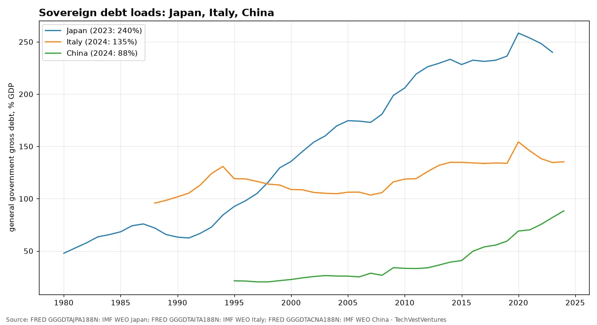
IMF World Economic Outlook general government gross debt, % of GDP (latest year in FRED shown in legend). China's ratio has more than doubled since the mid-2010s on the IMF measure, which excludes much local-government financing-vehicle debt.
Sources: FRED GGGDTAJPA188N: IMF WEO Japan FRED GGGDTAITA188N: IMF WEO Italy FRED GGGDTACNA188N: IMF WEO China
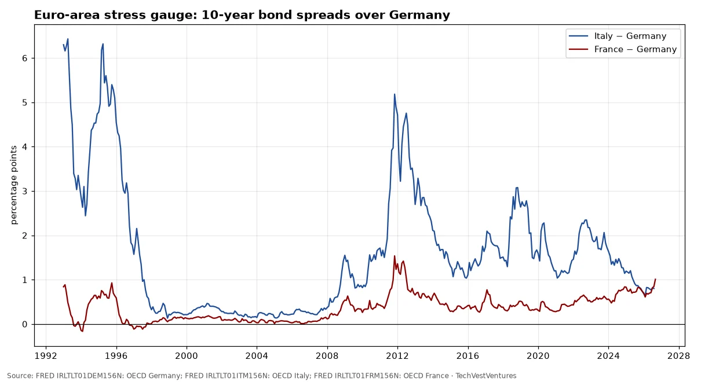
Monthly OECD long-term yields. France–Germany spread 1.01 pts in Sep 2026; Italy–Germany 0.80 pts in Aug 2026. Italy's spread peaked at 5.18 pts in Nov 2011 during the euro debt crisis. Since 1993 France's spread has exceeded Italy's only in Dec 2025, Jan 2026, Jul 2026 and Aug 2026 (latest month with both): markets now price French fiscal risk on a par with Italy's.
Sources: FRED IRLTLT01DEM156N: OECD Germany FRED IRLTLT01ITM156N: OECD Italy FRED IRLTLT01FRM156N: OECD France

Monthly 10-year government bond yields (OECD via FRED), latest Sep 2026 (Italy Aug). Japan's 3.05% is the highest since 1996; the UK's 5.24% and the US 4.99% are the highest since mid-2007; France since 2008 and Germany since 2009. The IMF's Oct 13 blog says the G7 average 10-year yield is the highest in nearly two decades and warns of the fiscal stakes. Cycle count: since 1990 the US 10-year has made three major cyclical peaks (late 1994, early 2000, mid-2007); two were followed by a US recession within about 1-2 years (2001, 2008-09) and one by a soft landing (1995). Three cycles with a 2-of-3 hit rate is right at Michael Hentschel's threshold, so read it as a warning, not a prediction.
Sources: FRED IRLTLT01USM156N (and DE, FR, IT, JP, GB, CA) IMF blog, Oct 13, 2026
Sep 2026 10-year yields: France 4.48%, about 1.0 pt over Germany. See charts M20 and M27. Source: OECD via FRED.
Data
- Sep 2026 (Data): France 4.48%, Germany 3.47%, Greece 4.23%, Portugal 3.85%.
- Aug 2026 (Data): Italy 3.99%, below France.
Doubt: the viral 174bp spread figure could not be verified. OECD monthly data show about 101bp over Bunds. The ranking (France above Italy, Greece and Portugal) holds.
See chart M20: Euro-area 10-year spreads over Germany (Q3 Europe Bonds tab) See chart M27: G7 long rates (Q3 Europe Bonds tab)
Sources: FRED IRLTLT01FRM156N: OECD France FRED IRLTLT01DEM156N: OECD Germany FRED IRLTLT01GRM156N: OECD Greece FRED IRLTLT01PTM156N: OECD Portugal FRED IRLTLT01ITM156N: OECD Italy

Germany 2025: 292 GW installed (2.5x 2002), but generation 510 TWh, −14% vs 2021. Energy-Charts, AGEB.
Data
- 2002 → 2025 (Data): installed capacity rose from 116 GW to 292 GW, mostly solar and wind.
- 2017 (Data): gross generation peaked at 654 TWh.
- 2025 (Data): generation 510 TWh, −14% vs 2021 and −22% vs 2017; renewables 58% of output.
- Apr 2023 (Data): Germany closed its last nuclear plants; nuclear capacity is now zero.
Caveat: solar and wind run far fewer hours than coal or nuclear, so rising capacity with falling output is partly by design. Lower demand and imports also cut generation.
Sources: Fraunhofer ISE Energy-Charts, installed power AG Energiebilanzen, gross generation, Sep 2026
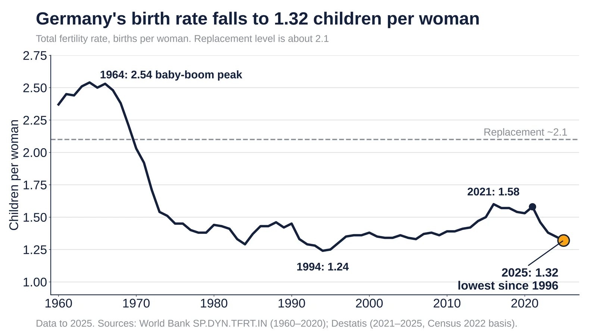
Germany fertility 1.32 in 2025, lowest since 1996; replacement is 2.1. Sources: Destatis, World Bank.
Data
- 1964 (Data): 2.54, the baby-boom peak.
- 1994 (Data): 1.24, the post-reunification low.
- 2021 (Data): 1.58.
- 2025 (Data): 1.32, the fourth straight fall and the lowest since 1996.
Sources: Destatis, total fertility rate (Stand Jul 2026) World Bank SP.DYN.TFRT.IN, Germany
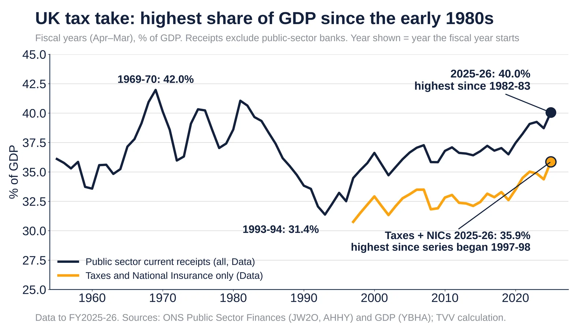
UK public receipts 40.0% of GDP in FY2025-26, highest since 1982-83. ONS data, TVV calculation.
Data
- 1969-70 (Data): 42.0% of GDP, the post-war peak.
- 1993-94 (Data): 31.4%, the low.
- 2025-26 (Data): 40.0%, up from 38.7% a year earlier; highest since 1982-83.
- 2025-26 (Data): taxes and National Insurance alone 35.9%, highest since that series began in 1997-98.
Doubt on the viral version: Michael A. Arouet's UK tax chart cites no source and appears to mix nominal and real figures. This rebuild uses ONS ratios to nominal GDP only.
Rebuttal: ONS public sector finances, receipts series JW2O
Sources: ONS JW2O: public sector current receipts excl. banks ONS AHHY: taxes and National Insurance ONS YBHA: GDP at current prices

2025: revenue €1,562.5B, spending €1,714.1B, deficit €151.6B. Debt €3,595.5B Q2 2026. Eurostat, INSEE.
Data
- 2025 (Data): Eurostat general-government revenue €1,562.5B; spending €1,714.1B; deficit €151.6B (5.1% of GDP per INSEE).
- End-2025 (Data): Maastricht debt €3,460.1B (115.7% of GDP).
- Q2 2026 (Data): debt €3,595.5B (119.0% of GDP); net debt €3,366.8B (INSEE IR-239, 29 Sep 2026).
- Arouet graphic claimed €1,590 / €1,755 / €165 / €3,650 — each figure is higher than the official series; TVV uses Eurostat/INSEE only.
Arouet’s framing (‘bankrupt’, ‘never repay’) is opinion. Official deficit is large but not unique in Europe; debt sustainability depends on rates, growth and ECB backstops, which this chart does not model.
Rebuttal: INSEE: France public deficit and debt (IR-239)
Original post: Michael A. Arouet, Nov 2026
Sources: Eurostat gov_10a_main: general government revenue and expenditure INSEE: France public deficit and debt INSEE English: government debt
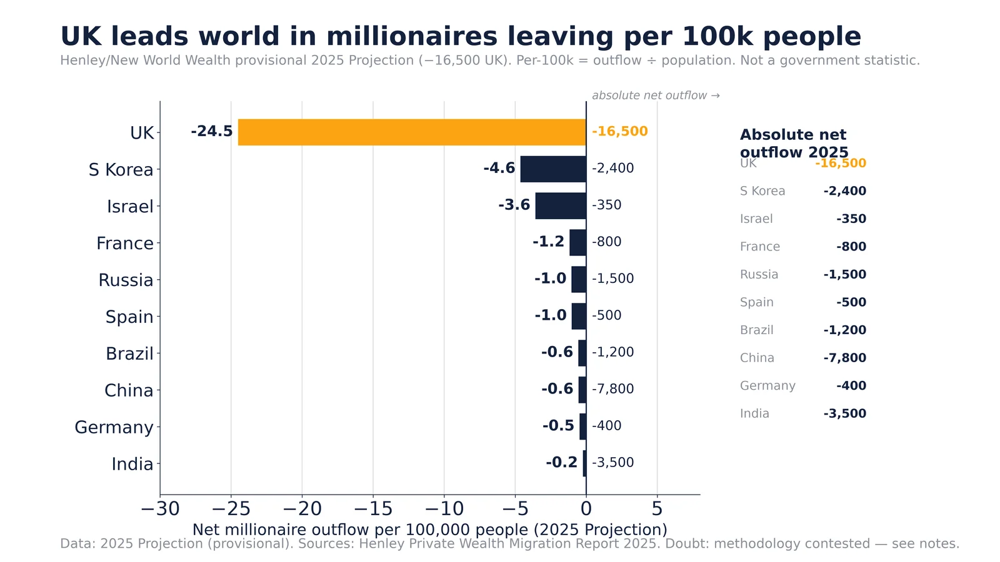
2025 Projection: UK −16,500 (−24.5 per 100k). Henley/New World Wealth provisional. Not a government series.
Projection
- 2025 Projection (Henley/New World Wealth): UK net −16,500 millionaires; China −7,800; India −3,500; S Korea −2,400.
- Per 100k (TVV calc from Henley flows ÷ mid-year population): UK −24.5; S Korea −4.6; Israel −3.6; France −1.2 — matches Arouet’s chart within rounding.
- Absolute vs per-capita: China loses more people (−7,800) but only −0.6 per 100k because of population size.
- Henley defines HNWI as liquid investable wealth ≥ $1M (excludes most real estate in 2025 methodology).
Henley/New World Wealth figures are provisional commercial estimates, not official migration stats. Tax Policy Associates (Jul 2025) argues the methodology is opaque and inconsistent with HMRC/OBR non-dom evidence; treat as directional only.
Rebuttal: Tax Policy Associates: Henley millionaire-migration methodology critique
Original post: Michael A. Arouet, Nov 2026
Sources: Henley Private Wealth Migration Report 2025 (press) Henley country wealth flows Tax Policy Associates critique (Jul 2025)
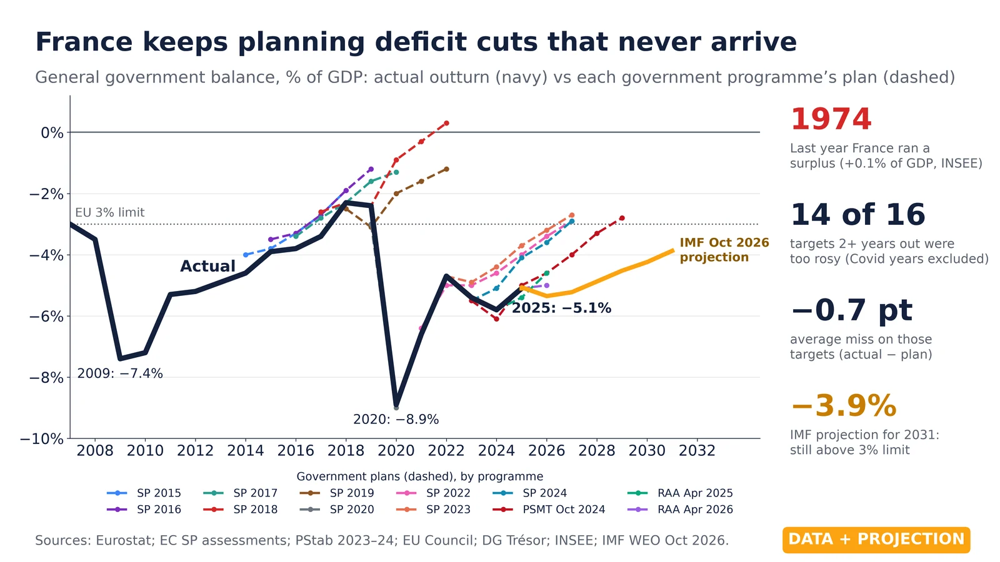
1995–2025 actuals and 2015–2026 plans: 14 of 16 targets two-plus years out missed. Eurostat, EC, Trésor, IMF.
Data + Projection
- 1974 (Data): France’s general government last ran a surplus in 1974, at +0.1% of GDP (INSEE long series). Every year since 1975 has been a deficit, so Arouet’s 1974 claim holds.
- 2015–2026 plans (Data): TVV checked 12 programmes (Stability Programmes 2015–2024, the Oct 2024 medium-term plan and the 2025–26 progress reports). 14 of 16 targets two or more years out were too optimistic, missing by 0.7 pt of GDP on average (Covid years excluded).
- Apr 2023 plan (Data): the worst non-Covid misses. Paris planned −4.4% for 2024 and −3.7% for 2025; outturns were −5.8% and −5.1%. The Apr 2018 programme even planned a +0.3% surplus for 2022.
- 2025 (Data): the deficit fell to −5.1% of GDP, slightly better than the −5.4% target in the Apr 2025 report. Near-term targets are sometimes met; the medium-term paths are what slip.
- Oct 2026 (Projection): the IMF sees −5.4% in 2026, −4.5% in 2029 and −3.9% in 2031, still above the 3% limit. The government’s Apr 2026 report targets −5.0% for 2026 and under 3% by 2029.
- Omitted: programmes before 2015 and the Apr 2021 programme (not retrieved from primary files), and the Mélenchon and Le Pen programme costings in the post (not data series).
Arouet’s chart shows forecasts from 1999 that always overshoot. TVV could verify only 2015–2026 vintages, and near-term estimates were sometimes too pessimistic: −3.1% planned for 2019 against −2.4% actual, −6.1% estimated for 2024 against −5.8%. The bias is real for targets two or more years out, not for every forecast. Actuals have also been revised since the plans were written.
Rebuttal: French Treasury: 2026 annual progress report (RAA)
Original post: Michael A. Arouet, Nov 2026
Sources: Eurostat gov_10dd_edpt1: government deficit and debt INSEE: national accounts of public administrations (DD_CNA_APU) Comptes Publics: French public deficit series European Commission: fiscal surveillance of France French Treasury: Stability Programme 2023–2027 French Treasury: Stability Programme 2024–2027 Council of the EU: France medium-term fiscal plan (ST 5016/2025 REV 1) French Treasury: 2025 annual progress report French Treasury: 2026 annual progress report (RAA) IMF World Economic Outlook database, October 2026 bd-econ: IMF WEO vintage database Original post: Michael A. Arouet, Nov 2026

2023, US$ PPP: 16 of 28 European medians top poster’s $34,510 line; all beat US poorest 10%. OECD IDD.
Data
- 2023 (Data): OECD median equivalised disposable income in US$ at consumption PPPs: US $49,885. Only Luxembourg ($66,476), Norway ($54,376) and Austria ($50,562) are higher among 28 European countries.
- 2023 (Data): the US poorest-10% threshold is $18,248 (OECD median ÷ P50/P10 ratio of 2.73). All 28 European medians are above it, the lowest being Hungary at $19,741.
- Poster’s line (Data): the $34,510 “US bottom 20%” figure matches the OECD’s 2016 US median ($34,514), not a bottom-quintile value. Against it, 16 of 28 European medians sit higher, not 1.
- 2025 (Data): the poster’s European figures are in PPS (an EU-27 price unit) and don’t match Eurostat’s 2025 medians: Luxembourg 37,673 (poster 40,000), Netherlands 29,714 (25,000), Hungary 11,958 (10,000).
- Method: comparing PPS to US dollars is not like-for-like, so TVV uses the OECD’s single US$ PPP measure for every country. Income year 2023 (Denmark 2022).
- Omitted: the US 20th-percentile threshold. Neither the OECD database nor the Census Table A-3 publishes it for disposable income, so the true “poorest 20%” line isn’t drawn.
The claim that all European countries except Luxembourg trail America’s poorest 20% is overstated. The poster’s threshold appears to be the 2016 US median, it compares PPS with dollars, and its European figures don’t match Eurostat. What does hold is that only 3 of 28 European countries beat the US median.
Rebuttal: OECD: Income and Wealth Distribution Database (IDD)
Original post: Michael A. Arouet, Nov 2026
Sources: OECD: Income and Wealth Distribution Database (IDD) OECD SDMX: disposable income (DSD_WISE_IDD) Eurostat ilc_di03: median equivalised income US Census Table A-3 (P60-286): income and poverty Original post: Michael A. Arouet, Nov 2026
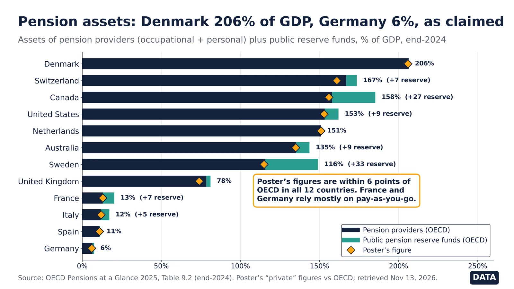
End-2024: pension providers hold 206% of GDP in Denmark, 6% in Germany; poster within 6 points. OECD.
Data
- End-2024 (Data): OECD Table 9.2 puts assets held by pension providers at 206.4% of GDP in Denmark, 166.9% Switzerland, 157.9% Canada, 153.3% US, 150.9% Netherlands, 135.1% Australia, 115.8% Sweden and 78.4% UK. Arouet’s figures match, all within 6 points.
- End-2024 (Data): at the bottom, France 12.9%, Italy 11.7%, Spain 10.8% and Germany 6.4%. Poster’s 13, 12, 11 and 6 hold. The OECD total is 95.2% of GDP.
- End-2024 (Data): the OECD counts public pension reserve funds separately: Sweden 33.3%, Canada 27.4%, US 8.7%, Australia 8.6%, France 7.3%, Italy 5.4%. Adding them would lift Sweden to 149% and Canada to 185% of GDP.
- Definition (Data): OECD “pension providers” include occupational and personal plans, defined-benefit and defined-contribution, and some public-sector plans and book reserves. The poster’s “private” label is therefore loose, notably for Canada and Sweden.
- Context: low funded assets in France, Italy, Spain and Germany mostly reflect large pay-as-you-go state pensions, not an absence of retirement income. The chart compares funded assets, not pension generosity.
- Omitted: asset mix, returns and the poster’s year (not stated); TVV uses the OECD’s latest, end-2024.
The ranking holds, but “private retirement assets” overstates what is counted. The OECD category includes some public-sector and book-reserve plans, and reserve funds sit on top. Low funded assets in France and Germany do not mean thin pensions, because the state pays most benefits from current taxes.
Rebuttal: OECD Pensions at a Glance 2025: assets earmarked for retirement (Table 9.2)
Original post: Michael A. Arouet, Nov 2026
Sources: OECD Pensions at a Glance 2025: assets earmarked for retirement (Table 9.2) OECD Pensions at a Glance 2025 (publication page) Original post: Michael A. Arouet, Nov 2026
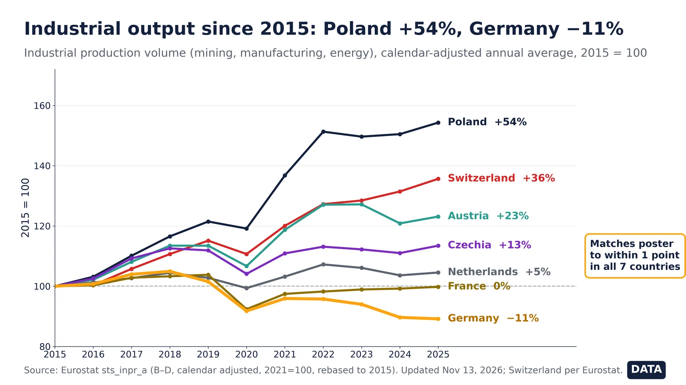
2025 vs 2015 industrial output: Poland +54%, Switzerland +36%, Austria +23%, Germany −11%. Eurostat.
Data
- 2025 vs 2015 (Data): Eurostat calendar-adjusted industrial production (mining, manufacturing, energy) is up 54.3% in Poland, 35.7% Switzerland, 23.1% Austria, 13.5% Czechia and 4.6% Netherlands, flat in France (−0.2%) and down 10.8% in Germany. Every poster figure holds to within 1 point.
- 2018 peak (Data): Germany’s index peaked at 108.6 (2021=100) in 2018 and was 92.3 in 2025, so the fall from the peak is 15%. INSEE dates the German decline from 2018.
- Jan–Sep 2026 (Data): vs the 2015 average, Poland +57%, Czechia +15%, Netherlands +9%, Austria +22%, France −1%, Germany −12%. Switzerland is +38% (Jan–Jun only; Eurostat has no Swiss data after Jun 2026).
- EU context (Data): the EU27 index is up 7.2% over the same decade, so Germany’s −11% sits well below the bloc and Poland’s +54% well above it.
- Switzerland (Data): the gain is mostly pharmaceuticals. WIFO notes Swiss and Danish industrial growth is mainly pharma, and excluding it the gap with Austria largely closes.
- Omitted: causes (energy prices, autos, China) and value-added or jobs measures. The chart shows output volume only.
The figures are right, but they measure output volume from one start year. Poland starts from a low base (index 73 in 2015 vs 100 in 2021), and Switzerland’s rise is largely a pharma story, not broad manufacturing. The chart cannot show why Germany fell, and Covid and 2022 energy shocks are in the window.
Rebuttal: WIFO: industrial production in Austria and Switzerland (2025)
Original post: Michael A. Arouet, Nov 2026
Sources: Eurostat sts_inpr_a: annual industrial production Eurostat sts_inpr_m: monthly industrial production WIFO: industrial production in Austria and Switzerland (2025) INSEE: industrial production in the euro area (March 2025 note) Original post: Michael A. Arouet, Nov 2026
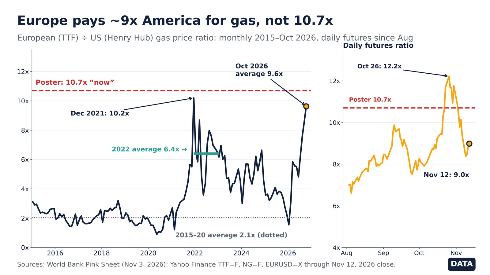
Europe-US gas price ratio: 2.1x in 2015–20, 6.4x in 2022, 9.6x Oct 2026, 9.0x Nov 12. World Bank, Yahoo.
Data
- 2015–2020 (Data): the World Bank Pink Sheet’s Europe (TTF) over US (Henry Hub) gas ratio averaged 2.05x. Rand’s “about 2x” holds.
- 2022 (Data): the ratio averaged 6.4x, matching Rand’s 6.4x. The monthly peak was 10.2x in Dec 2021.
- Oct 2026 (Data): Europe $28.50/mmbtu vs US $2.96 gives 9.6x. The World Bank says Europe gas rose 12.1% in October (Pink Sheet, Nov 3, 2026).
- Nov 12, 2026 (Data, TVV calc.): front-month TTF €92.26/MWh at 1.1095 $/€ and 3.412 mmbtu/MWh is $30.00, vs Henry Hub $3.34, so 9.0x. Rand’s 10.7x is overstated by about 1.7x for “now”.
- Oct 26 to Nov 6, 2026 (Data): the daily futures ratio peaked at 12.2x on Oct 26, was 10.9x on Nov 2 and 9.4x on Nov 6. The 10.7x is probably a reading from early November.
- Method: monthly series from World Bank averages; daily from Yahoo front-month futures, a different basis. Nov 13 intraday excluded. Omitted: EIA monthly spot (not needed for the ratio).
The 10.7x is not a current figure on any basis TVV could check: monthly 9.6x, front-month 9.0x on Nov 12. The ratio swings 2–3 points in days, and futures conversion depends on the euro rate. The historical 2x and 6.4x figures hold, so the trend claim is right but “now” is overstated.
Rebuttal: EIA: Henry Hub natural gas spot price (monthly)
Original post: Rand Group, Nov 2026
Sources: World Bank: commodity markets World Bank Pink Sheet: historical monthly commodity data (xlsx) Yahoo Finance TTF=F (Dutch TTF natural gas futures) Yahoo Finance NG=F (Henry Hub natural gas futures) EIA: Henry Hub natural gas spot price (monthly) Original post: Rand Group, Nov 2026
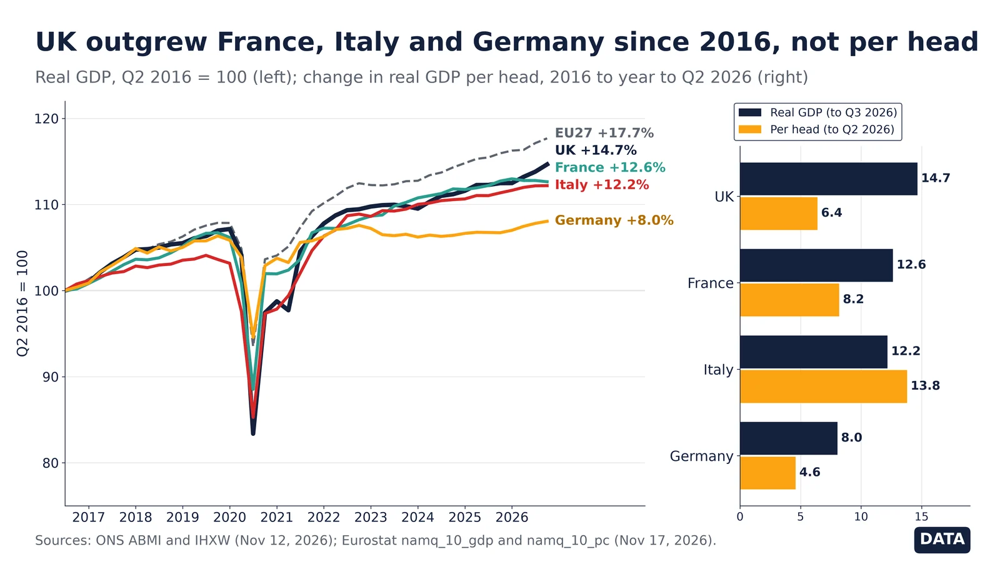
Q2 2016–Q3 2026 real GDP: UK +14.7%, France +12.6%, Italy +12.2%, Germany +8.0%. ONS, Eurostat.
Data
- Q2 2016 to Q3 2026 (Data): real GDP is up 14.7% in the UK, 12.6% in France, 12.2% in Italy and 8.0% in Germany. Arouet’s figures match exactly.
- Same period (Data): the EU27 as a whole grew 17.7%, more than the UK. The comparison holds against the three large economies, not the EU.
- Per head (Data): from 2016 to the year to Q2 2026, real GDP per person rose 6.4% in the UK, 8.2% in France, 13.8% in Italy and 4.6% in Germany. The UK lead comes from faster population growth.
- Since Q4 2019 (Data): UK +7.0%, Italy +8.7%, France +6.1%, Germany +2.1%. Italy has grown faster than the UK since the pandemic.
- Q3 2026 (Data): UK GDP grew 0.7% on the quarter in the ONS first estimate (Nov 12). First estimates are often revised.
- Omitted: the Nov 17 welfare chart (Universal Credit conditionality) and any no-Brexit counterfactual; neither is a GDP series.
The total-GDP claim holds, but it flatters the UK. Per person, Britain trails Italy and France since 2016 and only beats Germany. The UK also trails the EU27 aggregate, and the chart says nothing about what UK growth would have been without Brexit.
Rebuttal: ONS: UK real GDP per head (IHXW)
Original post: Michael A. Arouet, Nov 2026
Sources: ONS: UK real GDP, chained volume measures (ABMI) ONS: UK real GDP per head (IHXW) Eurostat: quarterly GDP and main components (namq_10_gdp) Eurostat: quarterly GDP per capita (namq_10_pc) Related post: Rand Group, Nov 2026 Original post: Michael A. Arouet, Nov 2026
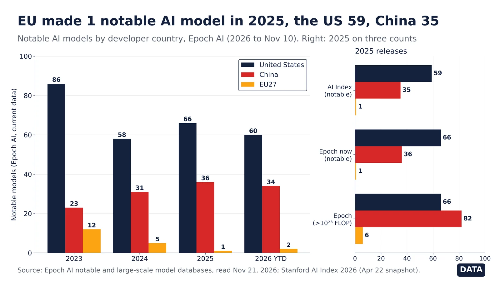
2025 notable AI models: US 59, China 35, EU 1 (Stanford AI Index 2026, Epoch AI). Read Nov 21, 2026.
Data
- Apr 2026 (Data): the Stanford AI Index 2026 counts 2025 notable AI models by country: US 59, China 35, South Korea 8, and one each for France, the UK, Canada, Hong Kong and Singapore. Arouet’s 59, 35 and 1 match. Europe as a whole had 2; the EU had 1, Mistral.
- Nov 21, 2026 (Data): Epoch AI’s current notable-models file, which the AI Index uses, now shows 2025 at US 66, China 36, EU27 1 after later additions. For 2026 to Nov 10 it shows US 60, China 34, EU27 2 (Mistral Large 4 and Medium 3.5).
- 2023–2025 (Data): the EU27 count fell from 12 to 5 to 1, while the US went 86, 58, 66 and China 23, 31, 36.
- 2025 (Data): on Epoch’s broader list of models trained with more than 10²³ FLOP, the counts are US 66, China 82, EU27 6 (Teuken, three Mistral models, INSAIT’s MamayLM, AGH’s Lapa). The EU gap holds on every definition.
- Aug 2, 2025 (Data): the EU AI Act’s rules for general-purpose models took effect. The EU decline from 12 to 5 began in 2024, before that date.
- Speculation: blaming regulation, energy prices or talent flight is opinion. The counts alone do not show the cause.
The count is real but small and curated. “Notable” is Epoch’s editorial list, not a census, and models are credited by author affiliation, so joint work can count twice. On the broader compute-based list the EU had 6 models in 2025, still far behind.
Rebuttal: epoch.ai: data/large-scale-ai-models
Original post: Michael A. Arouet, Nov 2026
Sources: hai.stanford.edu: assets/files/ai_index_report_2026_chapte epoch.ai: data/notable-ai-models epoch.ai: data/notable_ai_models.csv epoch.ai: data/large_scale_ai_models.csv digital-strategy.ec.europa.eu: en/policies/regulatory-framework-ai Original post (X)

2025 GDP: Russia $2.57T vs Italy $2.55T at market rates; $7.24T vs $3.74T at PPP. IMF WEO Oct 2026.
Data + Projection
- 2025 (Data): the IMF’s October 2026 WEO puts Russia’s GDP at $2.57T and Italy’s at $2.55T at market exchange rates. Russia is 1% larger, so Arouet’s “smaller than Italy’s” does not hold for the latest year.
- 2023–2024 (Data): Russia was smaller, $2.04T vs $2.32T in 2023 and $2.19T vs $2.38T in 2024, when the ruble averaged about 86 and 93 per dollar. The claim was true then.
- 2013–2027 (Data + Projection): the ratio swings with the ruble: 1.06 in 2013 at 32 per dollar, 0.74 in 2015 at 61, 1.09 in 2022 at 68, 1.01 in 2025 at 83. The IMF projects 1.06 in 2026 and 0.96 in 2027 as the ruble weakens to about 93.
- 2025 at PPP (Data): Russia’s output is $7.24T against Italy’s $3.74T, 1.93 times, up from 1.35 times in 2008. Arouet dismisses PPP for Russia; the IMF publishes both.
- 2025 per person (Data): Italy $43,270 vs Russia $17,864 at market rates (2.4 times); $63,508 vs $50,241 at PPP. Russia has 144 million people, Italy 59 million.
- Note: the post ID given (2123492707704213809, Nov 19) could not be read. Arouet repeats the claim in his Nov 21 post (2124136855641768039).
As a statement about size, the claim is out of date: on the IMF’s latest data the two economies are level at market rates and Russia is nearly twice Italy at PPP. It holds per person, where Italy is far richer, and it may hold again in 2027 if the ruble weakens.
Rebuttal: imf.org: en/publications/weo/issues/2026/10/13/wo
Original post: Michael A. Arouet, Nov 2026
Sources: imf.org: en/publications/weo/issues/2026/10/13/wo api.imf.org: external/sdmx/2.1/data/IMF.RES,WEO/RUS+I Original post (X) Original post (X)
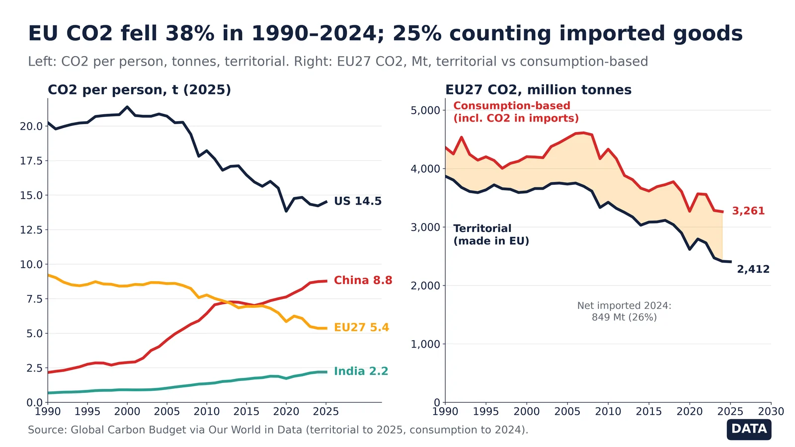
EU27 CO2 1990–2024: territorial −38%, consumption-based −25%. 2025 per person: EU 5.4t, China 8.8t. OWID.
Data
- 2025 (Data): CO2 per person was 14.5 tonnes in the US, 8.8 in China, 5.4 in the EU27 and 2.2 in India (Global Carbon Budget via Our World in Data). Rand’s chart matches.
- 1990–2024 (Data): EU27 territorial emissions fell 37.7%, from 3,869 to 2,412 Mt. Counting the CO2 in goods it imports, emissions fell 25.2%, from 4,361 to 3,261 Mt. Net imported CO2 was 849 Mt in 2024, 26% of the EU’s consumption footprint.
- 2021–2025 (Data): Eurostat’s industrial production index (2021 = 100) was 101.3 for all manufacturing in 2025, but 80.8 for chemicals, 88.9 for basic metals and 91.5 for paper. Energy-heavy industry shrank; manufacturing overall did not.
- 2021–2026 (Data): EU industrial electricity, excluding taxes, rose from €0.075 per kWh in H1 2021 to €0.192 in H2 2022 and was €0.131 in H1 2026. The spike came mainly from the 2022 gas crisis, not climate policy alone.
- 2022–2026 (Data): EU imports from China were €574bn in 2025, below the 2022 peak of €629bn. Jan–Sep 2026 imports were €471bn, up 10.2% on a year earlier.
- Speculation: Rand’s causal chain from climate policy to closed factories and more Chinese imports is opinion. The data show the pieces but not their cause.
Part of the EU’s cut was offshored: the consumption-based fall is 25%, not 38%. But manufacturing output overall is flat since 2021 and the energy shock came largely from Russian gas, so “climate policy closed the factories” overstates what the data show.
Rebuttal: ourworldindata.org: consumption-based-co2
Original post: Rand Group, Nov 2026
Sources: ourworldindata.org: co2-emissions owid-public.owid.io: data/co2/owid-co2-data.csv ourworldindata.org: consumption-based-co2 ec.europa.eu: eurostat/databrowser/view/sts_inpr_a/def ec.europa.eu: eurostat/databrowser/view/nrg_pc_205/def ec.europa.eu: eurostat/databrowser/view/ext_st_eu27_20 Original post (X)